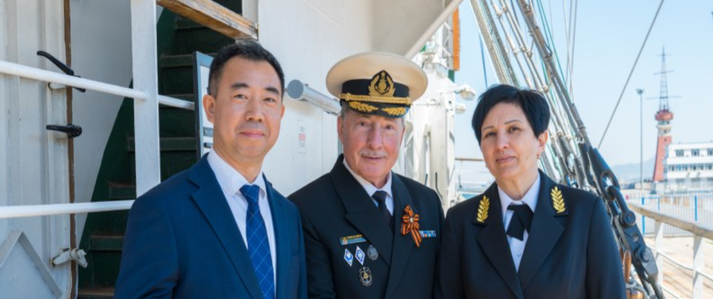
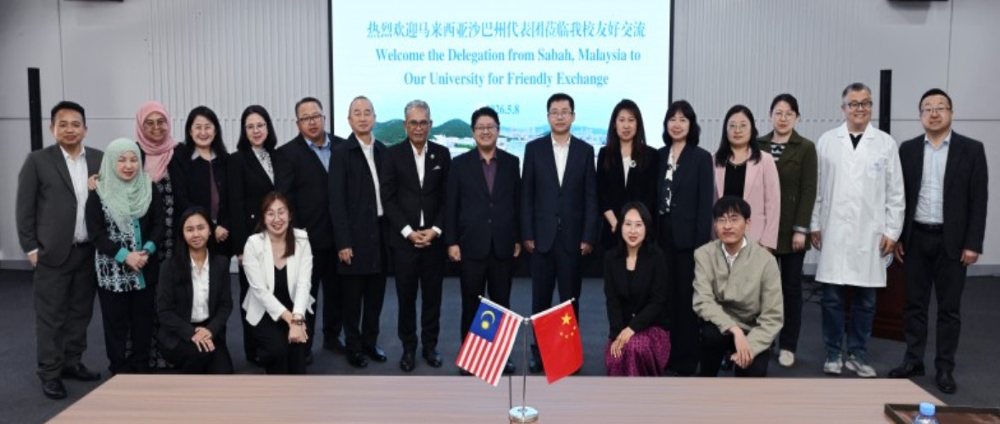

DALIAN OCEAN UNIVERSITY
Our University for Friendly Exchange



Year Founded
Colleges & Schools
Students
Faculty Members
Sea Area
Partner Countries
Ministry of Agriculture and Rural Affairs, leading aquaculture research
[ Learn More ]Innovation in sustainable fish farming and hatchery technologies
[ Learn More ]